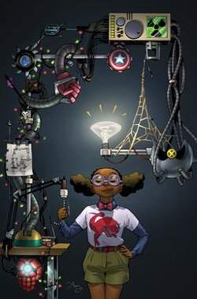
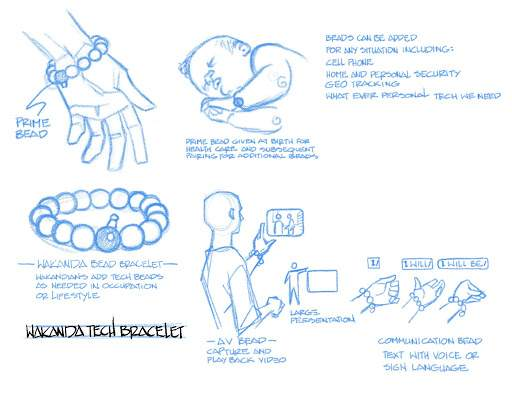
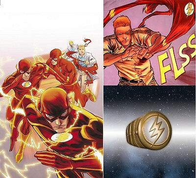
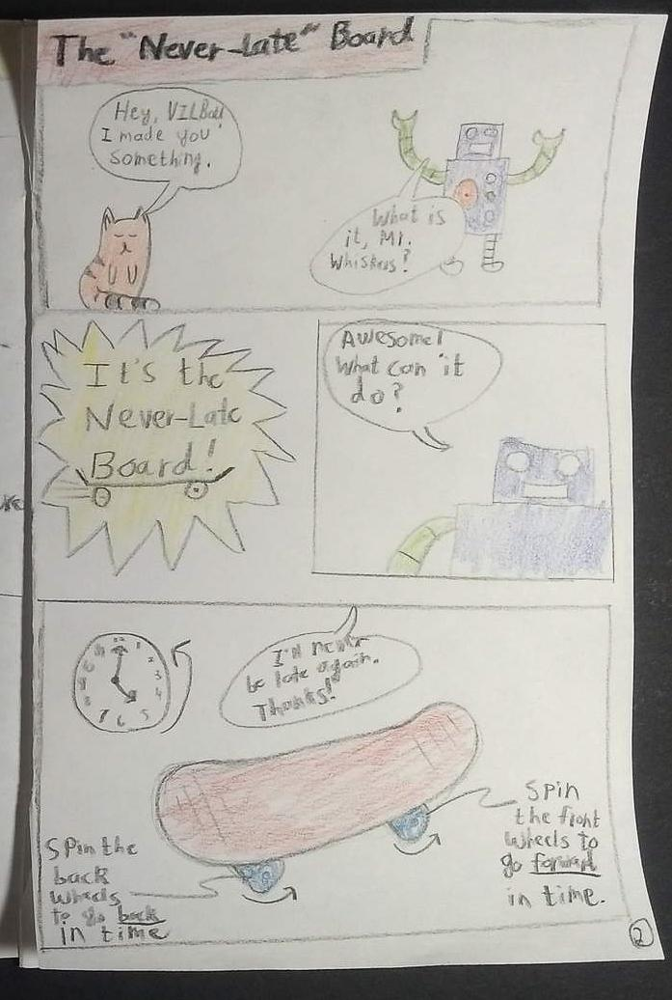

COMICS · LESSON 3 OF 5
Design Your Hero Gadget!
Invent something wild that helps your hero solve a problem. Do not worry whether your idea is possible yet.
- You need / Necesitas: your comic, pencil, and coloring supplies / tu cómic, lápiz y materiales para colorear
- Today you add / Hoy agregas: Page 2 / Página 2
O: Students will understand how clearly defined functions in technology can solve user needs.
D: Students will sketch and label a gadget for their hero, explaining its purpose, inputs, and outputs on a comic page.
A: Gadget — a small mechanical or electronic device used for a specific function. Input — a signal or action a device responds to. Output — what the device produces or does.
Y: What makes a gadget truly “smart” for your hero’s mission?
S: TEKS §127.2(d)(3)(I) and §127.2(d)(4)(B)
Get inspired: superhero gadgets
Open the three examples. Notice that each gadget has a clear job—it helps someone do something or escape a problem.
MOON GIRL'S INVENTIONS
Moon Girl combines tools such as a computerized utility belt, backpack, spring-powered boxing glove, and roller skates. Each invention helps her handle a different problem.

Marvel Comics character example.
BLACK PANTHER'S KIMOYO BEADS
Kimoyo beads can communicate, scan, and share information. Their function changes depending on the problem Black Panther needs to solve.

Marvel character technology example.
THE FLASH'S COSTUME RING
The Flash stores his costume in a ring so he can change quickly when trouble begins. One small gadget solves one clear problem.

DC Comics character technology example.
Create Page 2
The sky is the limit. Your gadget may be futuristic, magical, funny, or totally impossible. What matters is that it helps solve a problem.
Your page must include:
- Gadget name
- Purpose/function: What does it do?
- Drawing: Show what it looks like.
- Problem solved: Who or what does it help?
- One input: What signal or action does it respond to?
- One output: What happens or comes out?
Sentence stems
My gadget is called ____.
Its function is to ____.
The drawing shows ____.
It solves the problem of ____ by ____.
When it receives ____, it ____.
Student example: The drawing and comic panels show a gadget helping with a problem.

Input and output—keep it simple
Input: what makes the gadget start or what it receives. Output: what the gadget does, produces, shows, or sends. You do not need an if-then rule or a full system diagram.
Inspírate: gadgets de superhéroes
Abre los tres ejemplos. Cada gadget tiene una función clara: ayuda a alguien a hacer algo o resolver un problema.
LOS INVENTOS DE MOON GIRL
Moon Girl combina un cinturón computarizado, una mochila, un guante de boxeo con resorte y patines. Cada invento le ayuda con un problema diferente.
LAS CUENTAS KIMOYO DE BLACK PANTHER
Las cuentas Kimoyo pueden comunicar, escanear y compartir información. Su función cambia según el problema que Black Panther necesita resolver.
EL ANILLO DE TRAJE DE FLASH
Flash guarda su traje en un anillo para poder cambiarse rápidamente cuando comienza un problema. Un gadget pequeño resuelve un problema claro.
Crea la Página 2
El cielo es el límite. Tu gadget puede ser futurista, mágico, divertido o totalmente imposible. Lo importante es que ayude a resolver un problema.
Tu página debe incluir:
- Nombre del gadget
- Propósito/función: ¿Qué hace?
- Dibujo: Muestra cómo se ve.
- Problema resuelto: ¿A quién o qué ayuda?
- Una entrada: ¿A qué señal o acción responde?
- Una salida: ¿Qué pasa o qué produce?
Inicios de oración
Mi gadget se llama ____.
Su función es ____.
El dibujo muestra ____.
Resuelve el problema de ____ al ____.
Cuando recibe ____, ____.
Ejemplo de estudiante: El dibujo y los paneles muestran un gadget ayudando con un problema.
Entrada y salida—mantenlo sencillo
Entrada: lo que inicia el gadget o lo que recibe. Salida: lo que el gadget hace, produce, muestra o envía. No necesitas una regla si-entonces ni un diagrama completo.